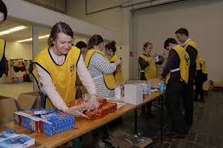
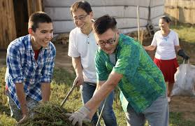

Through Humanitarian Work, The World Can Be A Better Place
LDS Humanitarian websiteIntroduction
The world faces numerous challenges such as poverty, inequality, and conflict. However, humanitarian work holds the power to bridge these gaps and make the world a better place. By providing aid to those in need, promoting education, fostering equality, and creating sustainable solutions, humanitarian efforts transform lives and communities. This essay explores the profound impact of humanitarian work and how it can create a more compassionate, inclusive, and thriving world.
- People helping friends
-
How does church serve
- Alleviating Poverty
- Promoting Education
- Fostering Equality
- Supporting Sustainability
- Who do they serve
Alleviating Poverty
Humanitarian work plays a crucial role in alleviating poverty. By distributing resources like food, water, and medical supplies, organizations address the basic needs of the most vulnerable populations. Initiatives like microloans and vocational training empower individuals to break the cycle of poverty. When families can access resources and opportunities, they become self-sufficient, contributing to their communities' economic growth and stability.
Promoting Education
Education is a powerful tool for change, and humanitarian efforts often focus on providing access to learning. Many humanitarian organizations build schools, provide scholarships, and supply educational materials in underprivileged areas. By equipping children and adults with knowledge and skills, these initiatives pave the way for brighter futures. Educated individuals are better equipped to tackle societal challenges and drive innovation, leading to a more equitable and prosperous world.
Fostering Equality
Humanitarian work fosters equality by advocating for marginalized groups, including women, refugees, and minorities. Initiatives like women's empowerment programs and refugee resettlement efforts strive to level the playing field for disadvantaged populations. When societies embrace diversity and inclusivity, they become stronger and more resilient, ensuring that everyone has a voice and an opportunity to thrive.
Supporting Sustainability
A better world requires sustainable solutions, and humanitarian work often addresses environmental and economic sustainability. Projects like clean energy initiatives, reforestation efforts, and water conservation programs protect natural resources while benefiting communities. By focusing on long-term impact, humanitarian work ensures that future generations inherit a world that can sustain life and growth.

Conclusion
Humanitarian work is a powerful catalyst for positive change. Through efforts to alleviate poverty, promote education, foster equality, and support sustainability, individuals and organizations transform lives and communities. As more people engage in humanitarian work, the collective impact can create a world where compassion, opportunity, and sustainability thrive. Everyone has a role to play in making the world a better place, whether through small acts of kindness, volunteer efforts, or supporting organizations dedicated to creating positive change.
Jump to Top